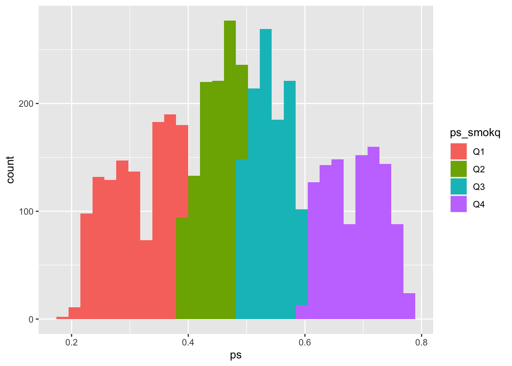

Chapter 8 Some approaches for confounding
8.1 Readings
The required readings for this chapter are:
Hernán and Robins (2020b): IP weighting for confounding adjustment and the concept of a Marginal Structural Model
Hernán and Robins (2020c): Propensity scores and outcome regression
There are also some supplemental readings you may find useful. First, the following is an instructional paper on constructing IP weights for marginal structural models:
This paper describes the use of propensity scores as an umbrella term for these types of approaches for covariate adjustment:
The following papers comment on the use of machine learning to improve or propensity score/weight estimation
while this chapter of the causal inference book explains the problem with traditional regression and exposure-confounder feedback
Lastly this paper offers a very good explanation on (non-)collapsibility:
8.2 Propensity scores and inverse probability weighting
We’ve already fit some Cox models with multiple covariates, where the interpretation of each parameter coefficient is conditional on the other parameters in the model, and typically these coefficients are expected to yield effect estimates unconfounded by the other variables in the model. In this section we will explore an alternative approach to confounding adjustment in inverse probability weighting (IPW).
Applied exercise: IPW for confounding adjustment
Using the FHS cohort data answer the following questions with repect to confounding of the potential effect of smoking on mortality and incident MI hospitalizations:
- Fit a conditional Cox model for the effect of smoking on MI hospitalization adjusting for sex and age using the limited dataset we created in the previous chapter (one observation per participant,
fhs_first). Estimate inverse probability weights for smoking exposure and fit a Marginal Structural Cox model using the weighted population. How do the results of the two models compare? - Plot survival curves for mortality and smoking status in the unweighted and weighted population. How do those curves compare?
- Using the time-varying dataset fit a conditional Cox model for smoking and MI hospitalizations adjusting for age, sex, BMI and blood pressure. Estimate time-varying inverse probability weights for exposure and fit a Marginal Structural Cox Model. How do the results of those two models compare?
Based on this exploratory exercise, think about what each approach is doing in terms of adjusting for confounding, and pros and cons for each in each situation.
Applied exercise: Example code
- Fit a conditional Cox model for the effect of smoking on MI hospitalization adjusting for sex and age using the limited dataset we created in the previous chapter (one observation per participant,
fhs_first). Estimate inverse probability weights for smoking exposure and fit a Marginal Structural Cox model using the weighted population. How do the results of the two models compare?
Let’s look back at our FHS data and reconstruct our simple models for current smoking status, first unadjusted, and then with age and sex also in the model.
First, you will want to recreate the fhs_first dataset if you don’t have it handy from the last chapter:
# Load some packages that will likely be useful
library(tidyverse)
library(broom)
library(gridExtra)
library(survival)
library(survminer)
library(splines)
# Load and clean the data
fhs <- read_csv("data/frmgham2.csv")
fhs <- fhs %>%
rename_all(.funs = str_to_lower)
fhs_first <- fhs %>%
group_by(randid) %>%
slice(1L) %>%
ungroup() %>%
mutate(timedthy = timedth / 365.25,
timemiy = timemi / 365.25,
agedth = age + timedthy) Next, you can refit some simple models to estimate the association between smoking status at the time of the baseline exam and time until the first hospitalization for myocardial infarction. You can start with fitting an unadjusted model (coxph_mod1), and then fit a model that also includes age and sex to control for those covariates (coxph_mod2):
###Fit Cox model for current smoking status unconditional and conditional on age and sex
coxph_mod1 <- coxph(Surv(timemi, hospmi) ~ cursmoke,
data = fhs_first)
coxph_mod1 %>%
tidy() %>%
filter(term == "cursmoke") %>%
mutate(hr = exp(estimate),
low_ci = estimate - 1.96 * std.error,
high_ci = estimate + 1.96 * std.error,
low_hr = exp(low_ci),
high_hr = exp(high_ci)) %>%
select(term, hr, low_hr, high_hr)## # A tibble: 1 × 4
## term hr low_hr high_hr
## <chr> <dbl> <dbl> <dbl>
## 1 cursmoke 1.43 1.19 1.73coxph_mod2 <- coxph(Surv(timemi, hospmi) ~ cursmoke + sex + age,
data = fhs_first)
coxph_mod2 %>%
tidy() %>%
filter(term == "cursmoke") %>%
mutate(hr = exp(estimate),
low_ci = estimate - 1.96 * std.error,
high_ci = estimate + 1.96 * std.error,
low_hr = exp(low_ci),
high_hr = exp(high_ci)) %>%
select(term, hr, low_hr, high_hr)## # A tibble: 1 × 4
## term hr low_hr high_hr
## <chr> <dbl> <dbl> <dbl>
## 1 cursmoke 1.35 1.11 1.64The first model (coxph_mod1) simply compares current smokers to current non-smokers in the population. It is not conditional on other variables, but also not adjusted for any potential confounding by them. The interpretation of the (exponentiated) parameter for cursmoke in the adjusted model (coxph_mod2) is, on the other hand, the Hazard Ratio comparing current smokers to current non-smokers conditional on age and sex. In other words this is the log-Hazard Ratio comparing currently smoking males of the same age to currently non-smoking males of the same age, and similarly currently smoking females of the same age to currently non-smoking females of the same age. This conditioning on other variables by including them in a regression model is often sufficient to adjust for any confounding by these variables and is the most widely used approach to adjust for confounding. In this example we see a lower HR in the adjusted (conditional) model than the unadjusted model.
This is a good point to revisit how a factor can confound an estimate of an effect in an epidemiological study. A confounder is something that can change the probability of the outcome (e.g., make it more likely that you die during follow-up, or making your expected time until death shorter). It also must be associated with the exposure you’re interested in. In this chapter, we’ll explore ways to remove this second condition—in other words, to try to make it so that potential confounders are no longer associated with exposure by the time we fit a regression model. From a causality point of view, mere association of a variable with exposure and outcome doesn’t render it a confounder, as other types of variables also share these properties such as colliders amd mediators. However, in this case we are interested in age and sex, that are defined at birth and therefore cannot possibly be a consequence of exposure, but rather any association is likely due to them causing the exposure through some king of mechanism.
Let’s start by checking whether age and sex are, in fact, associated with exposure (smoking at the baseline examination) in our sample data. Since sex is a binary variable in the data, we can check this by counting up the number of men and women, as well as the proportion of men (or women), in each of the exposure groups (people who smoked at baseline and those who did not):
fhs_first %>%
group_by(cursmoke) %>%
summarize(n_male = sum(sex == 1),
n_female = sum(sex == 2),
perc_male = n_male / n())## # A tibble: 2 × 4
## cursmoke n_male n_female perc_male
## <dbl> <int> <int> <dbl>
## 1 0 769 1484 0.341
## 2 1 1175 1006 0.539We can see that a much higher percent of smokers were male, compared to the percent of non-smokers who were male. In this data, then, sex is clearly associated with exposure.
Age is continuous rather than binary. One way we can quickly check for an association between age and exposure is with histograms of age for each exposure category:
fhs_first %>%
ggplot(aes(x = age)) +
geom_histogram() +
facet_wrap(~ cursmoke, ncol = 1)We could also calculate some metrics like quartiles and mean values of age within each group of exposure:
fhs_first %>%
group_by(cursmoke) %>%
summarize(mean_age = mean(age),
median_age = median(age),
perc25_age = quantile(age, 0.25),
perc75_age = quantile(age, 0.75))## # A tibble: 2 × 5
## cursmoke mean_age median_age perc25_age perc75_age
## <dbl> <dbl> <dbl> <dbl> <dbl>
## 1 0 51.7 52 44 59
## 2 1 48.1 47 41 54We can even quantify differences in the covariates across the two exposure groups (smoking and non-smoking) using something called the standardized mean difference. This is calculated as the absolute difference between the mean values of the covariate in the two exposure groups, divided by the standard deviation of the covariate when both groups are pooled. For example, you can calculate this for age in our data:
fhs_first %>%
summarize(mean_age_smoker = mean(age[cursmoke == 1]),
mean_age_nonsmoker = mean(age[cursmoke == 0]),
sd_age = sd(age)) %>%
mutate(stand_diff_age = abs(mean_age_smoker - mean_age_nonsmoker) / sd_age) %>%
pivot_longer(everything())## # A tibble: 4 × 2
## name value
## <chr> <dbl>
## 1 mean_age_smoker 48.1
## 2 mean_age_nonsmoker 51.7
## 3 sd_age 8.68
## 4 stand_diff_age 0.421A higher standardized mean different indicates more imbalance in the covariate across the exposure groups. Many studies look for a value below 0.1 as an indicator of reasonable balance in a covariate across the two exposure groups. We’re well above that here (0.42).
We can see that the study participants who were not smokers at baseline tend to be older than those who smoke. As with sex, it is clear that age is associated with the exposure for our research question. We know from biomedical knowledge (and some common sense, in the case of age) that both age and sex would also likely change the expected time until death after the baseline exam. Therefore, we should consider both as likely confounders, and we must do something to address this if we want to avoid biased estimates of the effect of smoking on survival time.
We have seen that we can fit a model where we control for these potential confounders in the regression model. For two covariates, this will usually work fine. However, often we might have a large number of potential confounders. Regression models can struggle as you add more (and more complex functions of) covariates. Since we are not really interested in the effect of these variables, we simply want to adjust for them, so that the effect of interest is unconfounded, their parameters in the model are also called ‘nuisance parameters.’ One way we can address this is by, essentially, splitting up the process of accounting for the association between potential confounders and probability of exposure from the process of modeling the association between the exposure and outcome. We will explore this idea in this chapter, focusing on methods that derive from the idea of propensity scores. In this section, we’ll introduce propensity scores, as well as one way to estimate them, and also use these scores to calculate and apply inverse probability weights. In the next section, we’ll look at a few other ways we can use propensity scores.
One of the easiest ways to think about propensity scores is to take a step back and think about a randomized control study, and how it would link probability of a certain level of exposure (or, more frequently, treatment, as in treatment with a certain drug) with covariates like age and sex. For a randomized control trial, you take a set of study subjects, and you randomly assign each of them to a level of treatment. This randomization completely breaks any association between any characteristics (like age and sex) and the probability of being assigned to treatment versus being assigned to the control group in a study. Of course, if the study population isn’t very big, there’s always a chance that the average characteristics of the treated and control groups end up being a little different—for example, by chance the people in the control group could have a higher average age. (This is why most studies of randomized control trials will still include tables that show the distribution of age, sex, etc., by treatment/control as part of their results, to help prove that the randomization “worked” in practice in terms of removing an association between these factors and treatment status.) However, as your study population gets relatively large, it should become very unlikely that there’s a difference between the two treatment groups in a randomized trial. By contrast, with observational studies, we don’t randomize the treatment (or, in our case, exposure).
The idea of a propensity score is to try to give each person in a study a score that represents their probability of having the exposure. In a randomized control trial that evenly divided the participants into treated and control, each study subject’s propensity score would be 0.5 (i.e., a 50/50 chance of being assigned to the treatment or control group). For observational studies, these propensity scores will be different for different people in the study, based on the levels of their covariates. For example, if a younger man was more likely than an older woman to be a smoker when entering the study (in our case, at the baseline examination), then the younger man would have a higher propensity score for the exposure of smoking compared to the older woman.
You can estimate these propensity scores by building a model that predicts exposure based on your different covariates, and then predict this model for each study subject to get their individual propensity score estimates. You can then use these propensity scores in a number of ways. For example, you can use them to create a matched dataset, creating pairs in your data where each person in the pair had the same propensity score for smoking (i.e., was equally likely to be a smoker at baseline based on potential confounders like their age and sex), but in real life had different exposure status (i.e., one was a smoker and one was not). You can then analyze these matched data as you would for any matched (paired) data set. You can also use the propensity scores to create strata in the data, where the people within each stratum have similar propensity for the exposure, and then estimate results within each stratum and combine those for an overall estimate (we’ll look at this in the next section). You can also directly control for the propensity score in the regression model (again, we’ll look at this in the next section). Finally, you can use propensity scores to create something called inverse probability weights, which we’ll look at later in this section.
Let’s start, then, by estimating the propensity scores for everyone in our study population. We can do this by building a model that aims to predict the probability of exposure (smoking at baseline, in our case) based on potential confounders. All the potential confounders should be things that really could change the chance of someone being a smoker at baseline, so they should all be things that happen or are in play before the baseline exam. Here, we’ll include age and sex, the two potential confounders we looked at earlier. There are many ways to build a predictive model, but one that you have already used a lot is a generalized linear model, so we’ll use that method. Since smoking is a binary variable (at least how we’re using it here, considering smokers versus non-smokers at time of the baseline exam), we’ll use a logistic regression model:
model_ps <- glm(cursmoke ~ age + sex,
family = "binomial", data = fhs_first)
model_ps %>%
tidy()## # A tibble: 3 × 5
## term estimate std.error statistic p.value
## <chr> <dbl> <dbl> <dbl> <dbl>
## 1 (Intercept) 3.84 0.218 17.6 1.37e-69
## 2 age -0.0514 0.00370 -13.9 8.06e-44
## 3 sex -0.839 0.0634 -13.2 6.04e-40We can see that these variables are significantly associated with current smoking status, however we are not going to be interpreting the parameter coefficients from this model. Instead, we will be using predictions based on this model to estimate our propensity score for each person in the study. We can do that using the predict function, applied to the GLM model object. By using type = "response", we can get those predictions in terms of a probability (the probability of the dependent variable in the regression, smoking status). We’ll add these propensity score estimates in as a new column in the data:
fhs_first <- fhs_first %>%
mutate(ps = predict(model_ps, type = "response"))
fhs_first %>%
select(randid, sex, age, ps) %>%
head()## # A tibble: 6 × 4
## randid sex age ps
## <dbl> <dbl> <dbl> <dbl>
## 1 2448 1 39 0.731
## 2 6238 2 46 0.450
## 3 9428 1 48 0.631
## 4 10552 2 61 0.274
## 5 11252 2 46 0.450
## 6 11263 2 43 0.488We can see that the propensity scores tend to be pretty similar for people who are similar in terms of age and sex—for example, study subjects 6238 and 11252 are both females who are 46, so they have identical propensity scores, and the score of study subject 11263, who is also a female but a few years younger, is similar but not identical.
Now, let’s look at how these propensity scores vary across the two exposure groups:
fhs_first %>%
ggplot(aes(x = ps)) +
geom_histogram() +
facet_wrap(~ cursmoke, ncol = 1)
You can see that our estimate of the propensity of being a smoker tends to be higher among those who actually were smokers, and lower among those who weren’t. However, you can still see there’s a lot of overlap. In other words, there are a lot of people that we would have guessed were likely to be smokers based on their age and sex, but who actually weren’t, and also a lot of people that we would have guessed would not be smokers, but who actually were.
If we re-do our analysis to focus on comparing smokers and non-smokers in terms of survival time, but change our approach to only compare people with similar propensity scores, or to reweight the populations of smokers and non-smokers to essentially even out propensity scores in the two groups, we’ll should remove the association between the covariates we used to estimate propensity scores (age and sex) and so remove the chance of these factors confounding our estimate. We’ll start with the idea of weighting our analysis, and then in the next section we’ll look at how we can change our analysis to compare people with similar propensity scores.
One way we can use these propensity scores is through inverse probability weighting or IPW. IPW allows us to adjust for confounding without having to include additional variables in our final outcome model other than the exposure of interest. Instead, we weigh each participant by the inverse of the probability that they had the exposure value they indeed had conditional on these other (potentially confounding) variables. The quantity we are estimating is:
\[ W=\frac{1}{f[X|V]} \]
where \(X\) is the exposure of interest and \(V\) is a vector for baseline confounders, in this case age and sex. We will estimate this value in the following way:
\[ W = \begin{cases} \frac{1}{PS} &\mbox{ if the subject was exposed},\\ \frac{1}{1-PS} &\mbox{ if the subject was unexposed.} \end{cases} \]
where \(PS\) is the propensity score we just estimated. The \(W\) therefore gives the inverse of the probability of the observed exposure level (probability of being exposed for those who were exposed, probability of being unexposed for those who were unexposed) for each person in the study, conditional on the covariates we used to estimate the propensity scores (age and sex).
We can add this inverse probability weight as a column in our data:
fhs_first <- fhs_first %>%
mutate(w = if_else(cursmoke == 1, 1 / ps, 1 / (1 - ps)))
fhs_first %>%
select(randid, age, sex, cursmoke, ps, w) %>%
head()## # A tibble: 6 × 6
## randid age sex cursmoke ps w
## <dbl> <dbl> <dbl> <dbl> <dbl> <dbl>
## 1 2448 39 1 0 0.731 3.71
## 2 6238 46 2 0 0.450 1.82
## 3 9428 48 1 1 0.631 1.59
## 4 10552 61 2 1 0.274 3.64
## 5 11252 46 2 1 0.450 2.22
## 6 11263 43 2 0 0.488 1.95Now we can see that, while study subjects 6238 and 11252 had the same propensity score (because they were the same age and sex, and those are the only factors we used to determine their propensity to be in the exposed group), they have different inverse probability weights (w). This is because one of them is a smoker, so her inverse probability weight gives the inverse of her propensity score (i.e., her propensity to be a smoker), while the other is a non-smoker, so her inverse probability weight gives the inverse of one minus her propensity score (i.e., her propensity to not be a smoker).
One cool thing is that, if we look again at the means for age and sex in the study population, we can see that if we weight them by these inverse probability weights, we remove almost all of the difference between the exposure groups in these two covariates:
fhs_first %>%
group_by(cursmoke) %>%
summarize(mean_age = mean(age),
wt_mean_age = weighted.mean(age, w = w),
mean_sex = mean(sex),
wt_mean_sex = weighted.mean(sex, w = w))## # A tibble: 2 × 5
## cursmoke mean_age wt_mean_age mean_sex wt_mean_sex
## <dbl> <dbl> <dbl> <dbl> <dbl>
## 1 0 51.7 49.7 1.66 1.55
## 2 1 48.1 49.8 1.46 1.55These weights therefore can help to balance the exposed and unexposed parts of the study population, to remove differences in age and sex between the two groups, through weighting when we fit the regression.
Next, let’s look at the distribution of these inverse probability weights:
fhs_first %>%
summarize(mean_w = mean(w),
max_w = max(w),
min_w = min(w),
sum_w = sum(w))## # A tibble: 1 × 4
## mean_w max_w min_w sum_w
## <dbl> <dbl> <dbl> <dbl>
## 1 2.00 4.79 1.24 8871.The mean weight value is 2, so by using the weights we’ll on average be counting 2 copies of each participant. Accordingly, the total sum of the weights is 8,870, which is roughly double the number of participants we started with. This is because what the weights are doing in this example, is basically create a pseudopopulation where we have enough people so that everyone can be both exposed and unexposed while maintaining the distribution of covariates (here age and sex). The latter has to hold, because the pseudopopulation has to be representative of the original target population. We can check this by looking at the distributions of age sex in both the weighted and unweighted data.
fhs_first %>%
summarize(mean_age = mean(age),
mean_agew = (sum(age * w) / sum(w)))## # A tibble: 1 × 2
## mean_age mean_agew
## <dbl> <dbl>
## 1 49.9 49.7fhs_first %>%
filter(sex == 2) %>%
summarize(femalecount = n(),
femalecountw = sum(w))## # A tibble: 1 × 2
## femalecount femalecountw
## <int> <dbl>
## 1 2490 4918.We see that the mean age is very similar in the original sample and in the pseudopopulation, while the number of females roughly doubles (as does the whole population), therefore approximately maintaining the initial proportion of females.
The great thing about the pseudopopulation is that the effect of cursmoke in no longer confounded by age and sex.
We can go ahead and fit a Cox proportional hazards model for cursmoke using our weights (we can use the weights parameter to add them in), and without including age and sex in the model.
###Fit Cox weighted model for current smoking status
coxph_modIPW <- coxph(Surv(timedth, death) ~ cursmoke, weights=w,
data = fhs_first)
coxph_modIPW %>%
tidy()## # A tibble: 1 × 6
## term estimate std.error robust.se statistic p.value
## <chr> <dbl> <dbl> <dbl> <dbl> <dbl>
## 1 cursmoke 0.313 0.0363 0.0532 5.88 0.00000000412coxph_modIPW %>%
tidy() %>%
filter(term == "cursmoke") %>%
mutate(hr = exp(estimate),
low_ci = estimate - 1.96 * std.error,
high_ci = estimate + 1.96 * std.error,
low_hr = exp(low_ci),
high_hr = exp(high_ci)) %>%
select(term, hr, low_hr, high_hr)## # A tibble: 1 × 4
## term hr low_hr high_hr
## <chr> <dbl> <dbl> <dbl>
## 1 cursmoke 1.37 1.27 1.47We see that the HR is very similar to before when we controlled for age and sex (coxph_mod2) (they are not exactly the same because of the non-collapsibility of the HR, more on this below, but also has a different interpretation). We also see that the CIs are actually narrower. This is because we are now using the pseudopopulation, which is twice the number of the original population. A larger sample size means more power and by extension smaller standard errors, but in our case this larger sample size is artificial, not real, and our CIs are misleadingly narrow. Rather than rely on the standard errors from the model, we instead have to rely on robust variance estimators that counteract our artificially inflated sample size. Our data are considered clustered, because of the multiple copies for each participant (randid). If we repeat the above model with a cluster term for randid, this will invoke a robust sandwich variance estimation.
We mentioned that the HR is non-collapsible. What this means is that a conditional estimate of the HR for an exposure of interest within levels of another predictor of the outcome is not collapsible as a marginal estimate (over all levels of the predictors) even in the absence of confounding. In other words if age was a predictor of the outcome (mortality increases with increasing age), but was not associated with smoking, we would still expect the HR for smoking to change after adjusting for age (here it would be higher). Therefore in our example where age is in fact a confounder, even if we assume that our estimated HR from this model takes care of all confounding by age, we still don’t necessarily expect it to be the same as the conditional HR from the model controlling for age due to non-collapsibility of the HR. Non-collapsibility is a property of parameters based on the hazard, rate, and odds, but not the risk (in other words the risk ratio and risk difference are collapsible). See the paper by Greenland, Pearl, and Robins (1999) for more on collapsibility.
Here is the model where we include randid through the cluster parameter, to improve our estimate of the confidence intervals:
coxph_modIPW <- coxph(Surv(timedth, death) ~ cursmoke,
weights = w, cluster = randid,
data = fhs_first)
coxph_modIPW %>%
tidy()## # A tibble: 1 × 6
## term estimate std.error robust.se statistic p.value
## <chr> <dbl> <dbl> <dbl> <dbl> <dbl>
## 1 cursmoke 0.313 0.0363 0.0532 5.88 0.00000000412We now have to use the robust.se rather than std.error to construct our CIs:
coxph_modIPW %>%
tidy() %>%
filter(term == "cursmoke") %>%
mutate(hr = exp(estimate),
low_ci = estimate - 1.96 * robust.se,
high_ci = estimate + 1.96 * robust.se,
low_hr = exp(low_ci),
high_hr = exp(high_ci)) %>%
select(term, hr, low_hr, high_hr)## # A tibble: 1 × 4
## term hr low_hr high_hr
## <chr> <dbl> <dbl> <dbl>
## 1 cursmoke 1.37 1.23 1.52The CIs are now wider than before and closer to the width of the CIs from the original conditional model. This weighted model is essentially a Marginal Structural Cox Model. Marginal Structural Models (MSMs) refer to models that are marginal or unconditional with respect to some covariates, as is the case of our model with respect to age and sex. The interpretaton for the Cox MSM hazard ratios is no longer conditional on age and sex or, in other words, we are not looking for effects within levels of age and sex. We are however still adjusting for confounding by these variables. It is also structural because we are essentially modeling counterfactuals (the result of the weights gives us enough participants so that everyone (from the original 4434 participants) can be exposed and unexposed). MSMs are essentially considered causal models though the causal interpretation relies on several assumptions (exchangeability, consistency, positivity, no information bias, correct model specification). In our case if there exist more confounders other than age and sex (likely) then the exchangeability assumption fails.
The use of weights and introduction of a counterfactual framework also changes the interpretation of the HR from a mere comparison of smokers and non-smokers in the population to a comparison of what would happened if everyone in the population was a smoker to what would have happened if no one was a smoker.
- Plot survival curves for mortality and smoking status in the unweighted and inverse probability–weighted population. How do those curves compare?
Using the inverse probability–weighted pseudopopulation we can also construct survival curves comparing what would happen if everyone had been a smoker and what would happen had no one smoked that are inherently adjusted for any confounding by age and sex. We did fit survival curves comparing smokers and non-smokers in the unweighted data that were unadjusted in section 7.3:
fit_smoke <- survfit(Surv(timedthy, death) ~ cursmoke, data = fhs_first)
fit_smoke %>%
ggsurvplot(xlab = "Time to death (years)",
ylab = expression(paste('Overall Survival Probablity ',
hat(S)*"(t)")))In the weighted pseudopopulation:
fit_smokeW <- survfit(Surv(timedthy, death) ~ cursmoke,
weights = w, data = fhs_first)
fit_smokeW %>%
ggsurvplot(xlab = "Time to death (years)",
ylab = expression(paste('Overall Survival Probablity ',
hat(S)*"(t)")))We see that there is a difference in the two plots, with the smokers and non-smokers having quite similar survival curves in the first one, but a separation in the second one that again in inherently adjusted for confounding by sex and age.
- Using the time-varying dataset fit a conditional Cox model for smoking and MI hospitalizations adjusting for age, sex, BMI and blood pressure. Estimate time-varying inverse probability weights for exposure and fit a Marginal Structural Cox Model. How do the results of those two models compare?
Now let’s revisit the time-varying dataset we created and fit a conditional model for time-varying smoking status and MI hospitalization adjusted for age, sex, BMI and systolic blood pressure.
We’ll be using the fhstv_incMI dataset we created in the last chapter. You can recreate that with the following code:
fhstv <- fhs %>%
group_by(randid) %>%
mutate(time_next = lead(time), ### bring forward the time from the next period
time2 = ifelse(is.na(time_next) == FALSE,
time_next - 1,
timedth), ### create a variable indicating the last day of follow-up in a given period
deathtv = ifelse(death == 1 & timedth <= time2, 1, 0),
timemi2 = ifelse(time2 <= timemi, time2, timemi),
hospmitv = ifelse(hospmi == 1 & timemi <= timemi2, 1, 0)) %>%
ungroup()
fhstv_incMI <- fhstv %>%
filter(prevmi == 0) Next, we can fit our original model, from the last chapter:
coxph_modtvMI <- coxph(Surv(time, timemi2, hospmitv) ~
cursmoke + ns(bmi, df = 3) +
ns(sysbp, df = 3) + age + sex,
data = fhstv_incMI)
coxph_modtvMI %>%
tidy()## # A tibble: 9 × 5
## term estimate std.error statistic p.value
## <chr> <dbl> <dbl> <dbl> <dbl>
## 1 cursmoke 0.588 0.109 5.40 6.77e- 8
## 2 ns(bmi, df = 3)1 0.942 0.391 2.41 1.59e- 2
## 3 ns(bmi, df = 3)2 0.241 1.57 0.154 8.78e- 1
## 4 ns(bmi, df = 3)3 -0.377 1.43 -0.263 7.92e- 1
## 5 ns(sysbp, df = 3)1 2.06 0.414 4.97 6.67e- 7
## 6 ns(sysbp, df = 3)2 4.85 1.62 2.98 2.84e- 3
## 7 ns(sysbp, df = 3)3 3.77 1.05 3.59 3.30e- 4
## 8 age 0.0322 0.00655 4.92 8.60e- 7
## 9 sex -1.15 0.114 -10.1 3.43e-24coxph_modtvMI %>%
tidy() %>%
filter(term == 'cursmoke') %>%
mutate(hr = exp(estimate),
low_ci = (estimate - 1.96 * std.error),
high_ci = (estimate + 1.96 * std.error),
low_hr = exp(low_ci),
high_hr = exp(high_ci)) %>%
select(term, hr, low_hr, high_hr)## # A tibble: 1 × 4
## term hr low_hr high_hr
## <chr> <dbl> <dbl> <dbl>
## 1 cursmoke 1.80 1.45 2.23One concern from this model is that BMI and systolic blood pressure maybe mediators for the effect of smoking on MI hospitalizations, in which case we wouldn’t want to control for them. However, given the time-varying nature of the exposure, BMI and systolic blood pressure may also be confounders if they have an effect on who changes smoking status in the future. This creates an exposure-confounder feedback, with the confounder causing the exposure and the exposure in turn having an effect on the confounder at a later time point. Traditional regression approaches are not adequately equipped to handle this type of confounding. However, IPW (and some other approaches) can adjust for confounding without blocking any mediating pathways.
In this time-varying setting the inverse probability weights will also be time-varying and the quantity is:
\[ W=\prod_{t}\frac{1}{f[X_{t}|\bar{X}_{t-1},\bar{C}_{t-1},V]} \]
where at each time point (period) the weight is the cumulative product of the inverse of the probability of the exposure value at each time point \(X_{t}\) conditional on the history of past exposures \(\bar{X}_{t-1}\) and covariates \(\bar{C}_{t-1}\) up to the previous period as well as the baseline covariates. In our case, the time varying covariates \(C_{t}\) are BMI and systolic blood pressure, while baseline covariates \(V\) are age and sex.
In order to estimate these weights we would have to lag exposure, BMI, and systolic blood pressure in order to predict current exposure \(X_{t}\) using past exposure and covariate values \(X_{t-1}\) and \(C_{t-1}\). We are omitting the overbars denoting history as we will assume the most recent value from the past is adequate to represent exposure and coviariate histories. We’ll also filter out any rows with missing values for the predictors—this will make it easier to join the predictions from the model up with this dataset in a minute.
fhstv_incMI <- fhstv_incMI %>%
group_by(randid) %>%
mutate(cursmoke_l1 = lag(cursmoke),
## We will set the lagged smoking status variable to equal the present
## smoking status for the first period (we are assuming smoking status
## didn't change right at the beginning of follow-up, and we don't
## have any information about smoking before the first exam)
cursmoke_l1 = if_else(period == 1, cursmoke, cursmoke_l1),
bmi_l1 = lag(bmi),
bmi_l1 = ifelse(period == 1, 0, bmi_l1),
sysbp_l1 = lag(sysbp),
sysbp_l1 = ifelse(period == 1, 0, sysbp_l1)) %>%
ungroup() %>%
filter(!is.na(cursmoke_l1) & !is.na(bmi_l1) & !is.na(sysbp_l1)) ### removing missing values for exposure and
## covariates. When fitting the conditional model these values are just dropped anyway, but in the weight estimation
## the missing values create a problem in the cumulative product part of the weight estimation so we are dropping
## them hereFurthermore, as we are assuming an order where smoking is a cause of BMI and systolic blood pressure at each time period, we don’t have BMI and blood pressure values to predict exposure at period 1. We have set those to zero above, so we can actually get a prediction for the probability of exposure values at this period based only on the baseline variables values (age and sex). We will also include time in the model, as in this time-varying setting it’s safe to assume that time-varying variables are a function of time.
mod_tvIPW <- glm(cursmoke ~ ns(time, df = 2) + age +
sex + cursmoke_l1 + ns(bmi_l1, df = 2) +
sysbp_l1, family = binomial, data = fhstv_incMI)
mod_tvIPW %>%
tidy()## # A tibble: 9 × 5
## term estimate std.error statistic p.value
## <chr> <dbl> <dbl> <dbl> <dbl>
## 1 (Intercept) -1.09 0.288 -3.80 1.47e- 4
## 2 ns(time, df = 2)1 1.14 2.22 0.515 6.06e- 1
## 3 ns(time, df = 2)2 -0.690 0.421 -1.64 1.01e- 1
## 4 age -0.0368 0.00484 -7.62 2.59e-14
## 5 sex 0.0273 0.0791 0.346 7.30e- 1
## 6 cursmoke_l1 5.72 0.0979 58.4 0
## 7 ns(bmi_l1, df = 2)1 -2.97 1.88 -1.58 1.13e- 1
## 8 ns(bmi_l1, df = 2)2 -2.22 0.868 -2.56 1.06e- 2
## 9 sysbp_l1 -0.00117 0.00239 -0.491 6.23e- 1Most of the above variables look like they are significant predictors of exposure, especially previous smoking (which makes sense!). However, once again, we are not interpreting the parameter coefficients of this model, we are only using it for prediction of the propensity scores and from those the inverse probability weights.
fhstv_incMI <- fhstv_incMI %>%
mutate(
# Estimate the propensity scores
ps = predict(mod_tvIPW, type = "response"),
# Estimate the inverse probability weights from the propensity scores and
# the actual exposure level for each study subject at each time point
w_i = if_else(cursmoke == 1, 1 / ps, 1 / (1 - ps))) %>%
group_by(randid) %>%
mutate(
# Get the cumulative product of the inverse probabilities over time
# for each study subject
w = cumprod(w_i)
) %>%
ungroup()
fhstv_incMI %>%
summarize(mean_w = mean(w),
min_w = min(w),
max_w = max(w),
sum_w = sum(w))## # A tibble: 1 × 4
## mean_w min_w max_w sum_w
## <dbl> <dbl> <dbl> <dbl>
## 1 6.07 1.03 1126. 68159.Due to the cumulative product nature of these weights, we now see that the mean weight is much higher than before, while the maximum weight value is now over 1,100, meaning that particular observation will count as over 1,100 observation in our analysis. This creates the possibility for very influential observations, due to weight inflation. One way to remedy this is to use stabilized weights, which involve a numerator that is also a probability of the actual exposure value at each time period. Unlike the denominator of the weights, the probability in the numerator will be a marginal probability of exposure or simply conditional on past exposure. We can even include our baseline covariates in the numerator model, however we will have to control for them in the final model if we do so. Here we will use probability of exposure values conditional on past exposure only for our numerators.
mod_tvIPWnum <- glm(cursmoke ~ ns(time, df = 2) + cursmoke_l1,
family = binomial, data = fhstv_incMI)
mod_tvIPWnum %>%
tidy()## # A tibble: 4 × 5
## term estimate std.error statistic p.value
## <chr> <dbl> <dbl> <dbl> <dbl>
## 1 (Intercept) -2.91 0.0832 -35.0 1.84e-268
## 2 ns(time, df = 2)1 -2.00 0.177 -11.3 1.13e- 29
## 3 ns(time, df = 2)2 -1.48 0.120 -12.4 4.66e- 35
## 4 cursmoke_l1 5.78 0.0961 60.2 0fhstv_incMI <- fhstv_incMI %>%
mutate(
# Estimate the new propensity scores
ps_new = predict(mod_tvIPWnum, type = "response"),
# Estimate the new inverse probability weights from the old and new
# propensity scores
w_i_new = if_else(cursmoke == 1, ps_new / ps, (1 - ps_new) / (1 - ps))) %>%
group_by(randid) %>%
mutate(
# Get the cumulative product of the inverse probabilities over time
# for each study subject based on these weighted scores
w_new = cumprod(w_i_new)
) %>%
ungroup()
fhstv_incMI %>%
summarize(mean_w_new = mean(w_new),
min_w_new = min(w_new),
max_w_new = max(w_new),
sum_w_new = sum(w_new))## # A tibble: 1 × 4
## mean_w_new min_w_new max_w_new sum_w_new
## <dbl> <dbl> <dbl> <dbl>
## 1 1.00 0.339 2.95 11240.A good rule of thumb for stabilized weights is that the mean of the weights should be around 1. Here we see that we are fairly close. If we want, we can try including sex and age to further improve our numerator model, and especially to tighten the range.
mod_tvIPWnum <- glm(cursmoke ~ ns(time, df = 2) + cursmoke_l1 +
age + sex, family = binomial,
data = fhstv_incMI)
mod_tvIPWnum %>%
tidy()## # A tibble: 6 × 5
## term estimate std.error statistic p.value
## <chr> <dbl> <dbl> <dbl> <dbl>
## 1 (Intercept) -1.10 0.280 -3.93 8.64e- 5
## 2 ns(time, df = 2)1 -1.51 0.186 -8.07 6.98e-16
## 3 ns(time, df = 2)2 -1.16 0.126 -9.18 4.35e-20
## 4 cursmoke_l1 5.74 0.0978 58.7 0
## 5 age -0.0380 0.00467 -8.14 3.90e-16
## 6 sex 0.0632 0.0777 0.813 4.16e- 1fhstv_incMI <- fhstv_incMI %>%
mutate(
# Estimate the new propensity scores
ps_new2 = predict(mod_tvIPWnum, type = "response"),
# Estimate the new inverse probability weights from the old and new
# propensity scores
w_i_new2 = if_else(cursmoke == 1, ps_new2 / ps, (1 - ps_new2) / (1 - ps))) %>%
group_by(randid) %>%
mutate(
# Get the cumulative product of the inverse probabilities over time
# for each study subject based on these weighted scores
w_new2 = cumprod(w_i_new2)
) %>%
ungroup()
fhstv_incMI %>%
summarize(mean_w_new2 = mean(w_new2),
min_w_new2 = min(w_new2),
max_w_new2 = max(w_new2),
sum_w_new2 = sum(w_new2))## # A tibble: 1 × 4
## mean_w_new2 min_w_new2 max_w_new2 sum_w_new2
## <dbl> <dbl> <dbl> <dbl>
## 1 1.00 0.470 1.91 11243.We now see that the weight range is narrower, meaning the chance for influential observations is not high. We can use either of w_new or w_new2, but we move forward with w_new2 since it was the best behaved overall. The cathc is that we have to include age and sex in the model, because we used them to predict the numerators of w_new2. WWe now get our Marginal Structural Cox model for MI hospitalizations. Note that because we are including age and sex in our model, it is therefore not marginal with respect to them, only with respect to BMI and systolic blood pressure.
coxph_modtvMIipw <- coxph(Surv(time, timemi2, hospmitv) ~
cursmoke + age + sex,
weights = w_new2, cluster = randid,
data = fhstv_incMI)
coxph_modtvMIipw %>%
tidy()## # A tibble: 3 × 6
## term estimate std.error robust.se statistic p.value
## <chr> <dbl> <dbl> <dbl> <dbl> <dbl>
## 1 cursmoke 0.508 0.107 0.106 4.80 1.58e- 6
## 2 age 0.0481 0.00613 0.00615 7.82 5.09e-15
## 3 sex -1.10 0.110 0.110 -10.0 1.06e-23coxph_modtvMIipw %>%
tidy() %>%
filter(term == 'cursmoke') %>%
mutate(hr = exp(estimate),
low_ci = (estimate - 1.96 * robust.se),
high_ci = (estimate + 1.96 * robust.se),
low_hr = exp(low_ci),
high_hr = exp(high_ci)) %>%
select(term, hr, low_hr, high_hr)## # A tibble: 1 × 4
## term hr low_hr high_hr
## <chr> <dbl> <dbl> <dbl>
## 1 cursmoke 1.66 1.35 2.05Based on the results of this model and using the correct interpretation we can deduce that the HR comparing what would have happened if everybody was always continuously a smoker (for the duration of follow-up), to what would have happened if no one was ever a smoker is 1.66 (95% CI: 1.35–2.05).
The HR is now lower that the conditional model, and although they are not directly comparable, the difference could be explained by the fact that we are no longer blocking a potentially negative effect of smoking on risk of MI hospitalization mediated through BMI (smoking usually has a negative association with BMI overall). Another potential explanation is that the conditional Cox model adjusting for BMI and blood pressure, also induced collider bias through unmeasured common causes between BMI and systolic blood pressure and the outcome, leading to bias away from the null. These are all issues we have to take in mind when choosing the estimation approach we think is more likely to lead to unbiased results. IPW is advantageous compared to traditional regression approaches to control for confounding in the presence of exposure-confounder feedback, however it comes at the cost of additional model(s). Misspecifying any of the models involved could also lead to bias, and as we have seen in the complex time-varying setting, weights may not always behave well. We could improve our weight estimation using machine learning algorithms that make fewer to no distributional and parametric assumptions, thus minimizing the potential for misspecification of weight models.
8.3 More ways to use propensity scores
As we mentioned earlier, IPW is technically part of a general approach to adjust for confounding relying on measures for the probability of exposure, known as propensity scores. In other words rather than adjusting for potential confounders directly, we adjust for the propensity of exposure given observed values of those potential confounders. Propensity scores can be used as weights (like in IPW), can be stratified upon, entered as a covariate in a model, or can be used as a matching variable for covariate adjustment. Each participant (or observation in the data) essentially receives a score for their propensity to be exposed given their covariate values. This score is equal to the probability of exposure given covariate values \(Pr[X=1|C]\) where \(X\) is the exposure of interest (\(X=1\) for exposed and \(X=0\) for unexposed), and \(C\) is a vector of covariates (potential confounders).
Applied exercise: Propensity scores for confounding adjustment
Using the FHS cohort data answer the following questions with respect to confounding of the potential effect of smoking on mortality:
- In the last section, you estimated the propensity score for exposure based on age and sex in the time-invariant dataset. Create quartiles for the propensity score and stratify on it. What is the relationship between smoking and baseline and hazard of mortality within these strata? How does it compare to the conditional Cox model adjusting for age and sex?
- Fit a Cox model with the propensity score in the model. How do these results compare to the ones above?
Applied exercise: Example code
- In the last section, you estimated the propensity score for exposure based on age and sex in the time-invariant dataset. Create quartiles for the propensity score and stratify on it. What is the relationship between smoking at baseline and hazard of mortality within these strata? How does it compare to the conditional Cox model adjusting for age and sex?
In the previous section, we estimated propensity scores for smoking in the study population along the way to estimating the IPWs. We saved these propensity scores in the column named ps:
fhs_first %>%
summarize(mean_ps = mean(ps),
max_ps = max(ps),
min_ps = min(ps),
sum_ps = sum(ps))## # A tibble: 1 × 4
## mean_ps max_ps min_ps sum_ps
## <dbl> <dbl> <dbl> <dbl>
## 1 0.492 0.787 0.192 2181.You may have noticed that, while in IPW we wanted to conditional probability of the value of exposure each participant had (i.e the probability that they were exposed if exposed and the probability that they were unexposed if unexposed), here we want the probability of exposure for everyone. In other words, the person’s actual exposure doesn’t make a difference in these estimated propensity scores. This slight difference has a consequence in the interpretation of our findings later. Therefore the PS is a continuous variable with a possible range of 0 to 1 and the sum of the propensity score should equal the number of exposed individuals in the dataset. Given the continuous nature of the PS it is difficult to stratify on it, as any given exact value may only have one participant with that value. In our case, since we are only predicting based on age and sex, participants with the same age and sex will have the same value, however those may still be small counts in each possible stratum.
fhs_first %>%
select(ps) %>%
head()## # A tibble: 6 × 1
## ps
## <dbl>
## 1 0.731
## 2 0.450
## 3 0.631
## 4 0.274
## 5 0.450
## 6 0.488We will therefore limit the possible number of strata and hopefuly increase the counts in each stratum by creating quartiles for the PS:
fhs_first <- fhs_first %>%
mutate(ps_smokq = case_when(
ps <= quantile(ps, 0.25) ~ "Q1",
ps <= quantile(ps, 0.5) ~ "Q2",
ps <= quantile(ps, 0.75) ~ "Q3",
ps <= max(ps) ~ "Q4",
TRUE ~ NA_character_
)) %>%
mutate(ps_smokq = as_factor(ps_smokq),
ps_smokq = fct_relevel(ps_smokq, "Q1", "Q2", "Q3", "Q4"))We can check the first few rows of the new variable, as well as use a histogram to see how the ps_smokq variable divides the propensity scores into quartiles:
fhs_first %>%
select(ps, ps_smokq)## # A tibble: 4,434 × 2
## ps ps_smokq
## <dbl> <fct>
## 1 0.731 Q4
## 2 0.450 Q2
## 3 0.631 Q4
## 4 0.274 Q1
## 5 0.450 Q2
## 6 0.488 Q2
## 7 0.254 Q1
## 8 0.463 Q2
## 9 0.582 Q3
## 10 0.688 Q4
## # … with 4,424 more rowsggplot(fhs_first) +
geom_histogram(aes(x = ps, fill = ps_smokq))
If we now fit our models in each of the strata defined by the quartiles. Anytime you need to apply the same model to several subsets of your data, it can save you time (and code) to nest the data to create the subsets, then use map from purrr to map that function across all your subsets of data and use the tidy function to pull out the tidy coefficient estimates from the model. In this case, we only have four subsets, so we could have instead filtered to each subset and run the model several times, but this trick becomes especially useful if you want to run the same model on tens or even a hundred or more different subsets, so it’s worth checking out.
library(purrr)
cox_ps_quantiles <- fhs_first %>%
group_by(ps_smokq) %>%
nest() %>%
mutate(cox_mod_quartile = map(data,
.f = ~ coxph(Surv(timemi, hospmi) ~
cursmoke,
data = .x)),
tidy_coxph = map(cox_mod_quartile, .f = tidy)) %>%
select(-c(data, cox_mod_quartile)) %>%
unnest(cols = tidy_coxph) %>%
ungroup() %>%
arrange(ps_smokq) %>%
mutate(hr = exp(estimate),
low_ci = estimate - 1.96 * std.error,
high_ci = estimate + 1.96 * std.error,
low_hr = exp(low_ci),
high_hr = exp(high_ci)) %>%
select(ps_smokq, hr, low_hr, high_hr)
cox_ps_quantiles## # A tibble: 4 × 4
## ps_smokq hr low_hr high_hr
## <fct> <dbl> <dbl> <dbl>
## 1 Q1 1.21 0.784 1.88
## 2 Q2 1.35 0.902 2.02
## 3 Q3 1.38 0.922 2.05
## 4 Q4 1.31 0.930 1.83The individual HR from each stratum are all lower than those from the original unadjusted model (coxph_mod1) as was the HR from the conditional model (coxph_mod2), but not quite the same value as the conditional model (with the exception of the third quantile). Furthermore, we see that CIs are wider (all include the null) as we lose power when looking in each individual stratum. Expanding the number of categories for the PS (e.g., to deciles) may improve our control for confounding, and get us closer to the original adjusted values, but it will come at the cost of additional loss of power (because the number of study subjects in each subset will continue to decrease as we increase the number of subsets).
- Fit a Cox model with the propensity score in the model. How do these results compare to the ones above?
We can instead fit a model including the original continuous PS as a covariate in the model and maintain our original power:
coxph_modPS <- coxph(Surv(timemi, hospmi) ~ cursmoke + ps,
data = fhs_first)
coxph_modPS %>%
tidy() %>%
filter(term == "cursmoke") %>%
mutate(hr = exp(estimate),
low_ci = estimate - 1.96 * std.error,
high_ci = estimate + 1.96 * std.error,
low_hr = exp(low_ci),
high_hr = exp(high_ci)) %>%
select(term, hr, low_hr, high_hr)## # A tibble: 1 × 4
## term hr low_hr high_hr
## <chr> <dbl> <dbl> <dbl>
## 1 cursmoke 1.34 1.10 1.62We see that our CIs are now less wide, however our estimate (though similar) does not exactly match the one from the original adjusted model, nor the IP weighted model. Again the interpretation of the HR from this model is different from those two, and in the case of IPW it has to do with the nuanced difference of focusing on the probability of being exposed, rather than the probability of having the exposure value each one had (i.e., exposed or unexposed). The correct interpretation of this HR is as the effect of exposure in the exposed. In other words it is the HR comparing what would have happened if the exposed were exposed (what actually happened) to what would have happened if the exposed were unexposed. By contrast remember that the interpretation of the HR in the case of IPW was the HR comparing what would have happened if everyone was exposed to what would have happened if nobody was exposed.
To wrap up, there are a few additional points we should bring up. The first is about how this analysis compares to the results from a randomized control trail. We mentioned earlier that the propensity score approaches help to break the association between potential confounders and exposure. This is true, but can only be done for potential confounders that are measured—you have to build a model with the values to predict propensity scores, so you can’t include any confounders that haven’t been measured, and certainly not things that you haven’t even thought might be confounders. By contrast, the randomization in a randomized control trial can, if the study population is large enough, effectively break the association between exposure (or, more often, treatment) and any possible confounder, whether you’ve measured (or even thought about) it or not. Propensity score methods do not do this.
The other point we want to bring up is about the propensity score model. We used a pretty simple one (at least in terms of you having seen it before)—a logistic regression model. However, you can use any format of predictive model that you think might work. This is one area in epidemiology where you see some machine learning methods—some people have tried using things like random forests, ridge or lasso regression, and neural networks to improve their propensity score model. This is at heart a predictive model, rather than one built for inference. In other words, you’re aiming for a model that performs well in predicting the outcome, rather than in estimating the relationship between a particular independent variable and the outcome (as we’ve done for most of our earlier models). Some of the other types of models might be particularly helpful if you have loads of potential confounders that you want to include, especially if some of them are strongly correlated, because some of these other types of models handle large numbers of (potentially collinear) independent variables better than classic regression models do. These other types of models might be useful if you have a case where you think there’s a lot of non-linearity in the relationship between your confounders and your exposure, or if you think that there might be a lot of interactions between different confounders in predicting the outcome (this could certainly be the case in the example used here—age might have different influences on the chance of smoking for males versus females). If you are using propensity scores in your own research, you could explore some of these other types of models for building your predictive model of the propensity of being exposed versus unexposed.